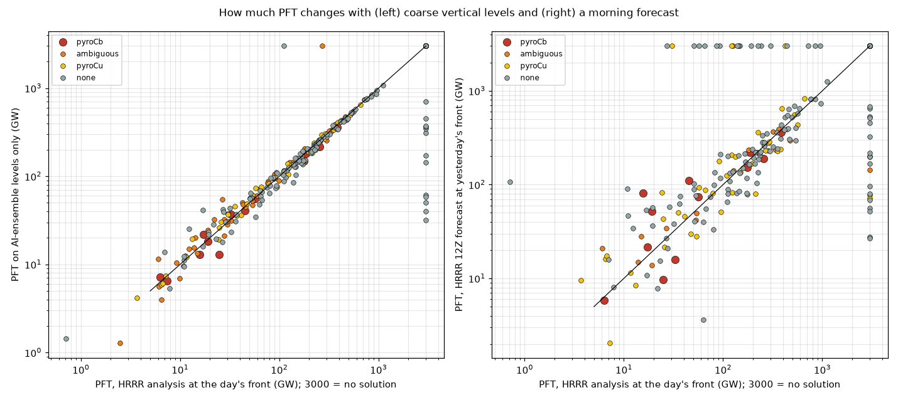

A hindcast: for each fire day, the 12Z (05 PDT) HRRR run's afternoon forecast (f09–f15) at the fire front known that morning, as an analyst could have computed it before the burn period.
Watch: the forecast PFT has a solution and drops to 360 GW or less. Warning: Watch, and yesterday's peak satellite fire power is at least 0.13 of the forecast PFT.
The last row is a candidate third screen, tested after the tiers were set: the morning forecast's pyroconvective CAPE (the pyroCb parcel's buoyant energy above zfc) of 70 J/kg or more. Held out fire by fire it caught most pyroCb days, among the best forecast measures tested, but several pyroCb days sat close to the cut.
Each day's lowest PFT, morning forecast vs the HRRR analysis. Days on the dashed line were forecast exactly.
Scores with each fire held out.
PFT on the AI ensembles' standard pressure levels matched the full HRRR column.
